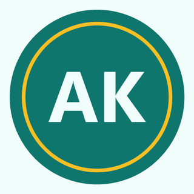

Про автора
Привіт! Я Арсен Кравець з групи ІПЗ 3/2. Проєкт TaskBoard — моя перша спроба зібрати вебзастосунок від початку до кінця.
Найбільше мені цікаво, як сторінка в браузері спілкується із сервером, тому чекаю частини курсу про Flask.